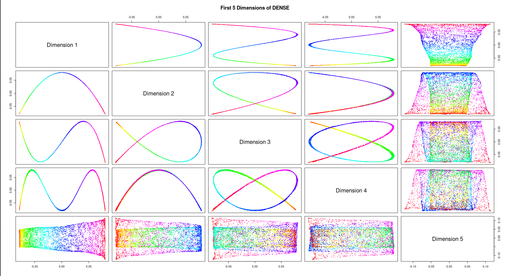
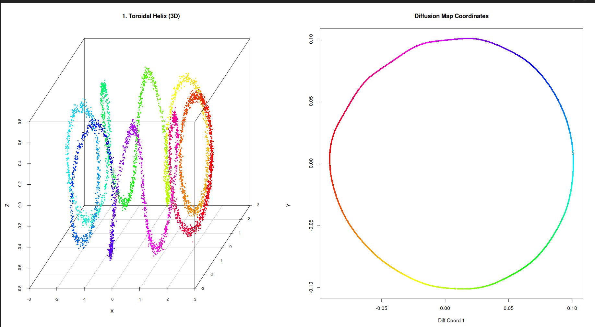

Overview of cDiffusion
How Diffusion Maps Work
Diffusion Maps are a non-linear dimensionality reduction technique. While methods like PCA assume data lies on a flat, linear plane, Diffusion Maps are designed to uncover complex, folded structures (manifolds) by simulating a random walk (a Markov chain) over the data points.
The core algorithm consists of three mathematical steps:
-
Kernel Construction (Affinity Matrix): We calculate the distances between data points and apply a Gaussian kernel to convert these distances into affinities (similarities). Points that are close together get an affinity near 1.0, and points far away drop to 0.0.
- Dense Method: Calculates distances between all possible pairs of points using a single global sigma.
- Sparse Method: Builds a k-Nearest Neighbors (k-NN) graph. It only connects a point to its closest neighbors using an adaptive, local sigma. This forces the algorithm to “walk” strictly along the shape of the data.
- Markov Normalization: The affinity matrix is normalized by its row sums. This transforms the matrix into a set of transition probabilities, representing the chance of “jumping” from one point to another in a single step of a random walk.
- Eigendecomposition: We calculate the eigenvalues and eigenvectors of this transition matrix using a fast Randomized SVD (rSVD) solver. The first non-trivial eigenvectors form the new, reduced coordinates that represent the underlying geometry of the dataset.
1. Harmonics of Diffusion Maps (The Swiss Roll)
When dealing with a continuous 1D manifold rolled up in a 3D space (like a Swiss Roll), the resulting diffusion dimensions represent subsequent harmonic functions (cosine waves of increasing frequencies).
Plotting these dimensions against each other produces different curves (parabolas, waves, and figure-eights). The last dimension finally captures the “width” of the unrolled sheet.
library(scatterplot3d)
library(cDiffusion)
set.seed(67)
N <- 7000
t <- runif(N, min = 1.5 * pi, max = 4.5 * pi)
t <- sort(t)
h <- runif(N, min = 0, max = 20)
X <- t * cos(t) + rnorm(N, sd=0.3)
Y <- h
Z <- t * sin(t) + rnorm(N, sd=0.3)
swiss_data <- cbind(X, Y, Z)
colors <- rainbow(N)
model_swiss_dense <- run_diffusion(swiss_data, dims = 5, n_iter = 100)
coords_3d <- model_swiss_dense$coordinates[, 1:5]
par(mfrow=c(1, 1), mar=c(4, 4, 4, 1))
pairs(coords_3d,
col = colors,
pch = 16,
cex = 0.4,
labels = c("Dimension 1", "Dimension 2", "Dimension 3", "Dimension 4", "Dimension 5"),
main = "First 5 Dimensions of DENSE") 
2. Unrolling a Toroidal Helix
A Toroidal Helix is a complex 3D shape representing a coiled spring wrapped around a torus. Because it relies on non-uniform sampling, it is an extremely difficult shape for traditional reduction methods.
Using the sparse k-NN approach, cDiffusion easily discovers the underlying primary cycle of the manifold, unrolling the complex 3D knot into a perfect 2D circle.
library(scatterplot3d)
library(cDiffusion)
set.seed(67)
N_points <- 5000
R <- 2
r <- 0.6
omega <- 8
u <- rbeta(N_points, 0.7, 0.7)
t <- sort(u * 2 * pi)
phi <- t
theta <- omega * t
X_t <- (R + r * cos(theta)) * cos(phi) + rnorm(N_points, sd=0.03)
Y_t <- (R + r * cos(theta)) * sin(phi) + rnorm(N_points, sd=0.03)
Z_t <- r * sin(theta) + rnorm(N_points, sd=0.03)
helix_data <- cbind(X_t, Y_t, Z_t)
helix_colors <- hsv(phi / (2*pi), 1, 1)
par(mfrow=c(1,2), mar=c(2,2,2,1))
scatterplot3d(helix_data, color = helix_colors, pch = 16, cex.symbols = 0.5,
main = "1. Toroidal Helix (3D)", angle = 60,
xlab = "X", ylab = "Y", zlab = "Z")
model_helix <- run_diffusion_sparse(helix_data, dims = 5, k_neighbors = 35, n_iter = 1000, oversampling = 20)
coords <- model_helix$coordinates
plot(coords[,1], coords[,2],
col = helix_colors, pch = 16, cex = 0.6,
main = "Diffusion Map Coordinates",
xlab = "Diff Coord 1", ylab = "Diff Coord 2")